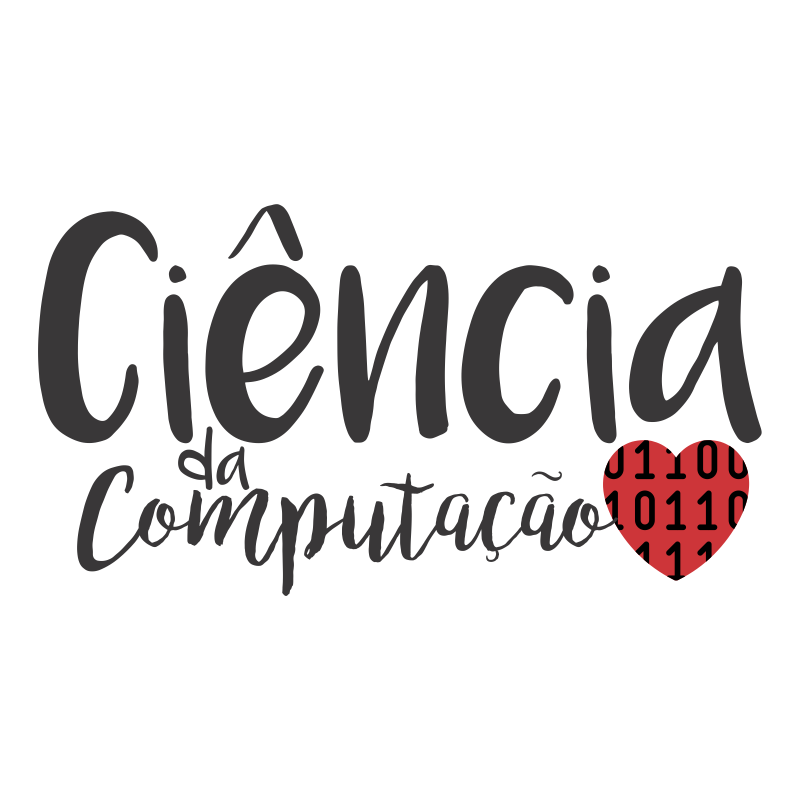

Sobre o Sistema
Home Page
Sobre
Vida pessoal
Carreira
Fotos
Entrevistas
Folha São Paulo
Revista Galileu
Contato
Curriculum vitae
Mande sua mensagem
Sobre o Sistema
Emanuele Amanda Marques
Projeto desenvolvido para a disciplina de Criação de Páginas da WEB
Acadêmica do Curso Bacharelado em Ciência da Computação
Instituto Federal Sul-Riograndense - Campus Passo Fundo
